CODING AGENTS AS PIXEL WORLD MODELS
traex/DeepSeek-V4.1-Flash · phygen_007
点击播放 · 原生 RGB 像素
逐轮保存的候选
回放视频、检查图与代码变化。
每份候选均可单独播放。实际图片检查记录在下方工具轨迹中。
候选 01播放与检查图
点击播放 · 原生 RGB 像素

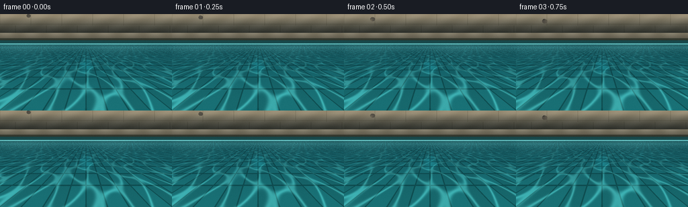
展开代码变化
--- 上一保存版本
+++ 本次保存版本
@@ -0,0 +1,400 @@
+from pathlib import Path
+
+import numpy as np
+from PIL import Image, ImageDraw, ImageFilter
+
+from artifact_io import save
+
+
+CASE_DIR = Path(__file__).resolve().parent
+W, H = 256, 144
+SS = 3
+RW, RH = W * SS, H * SS
+N_FRAMES = 20
+FPS = 4
+
+
+def gaussian_blur(array, radius):
+ """Separable Gaussian blur for a 2-D floating-point array."""
+ sigma = max(float(radius), 0.05)
+ half = max(1, int(np.ceil(3.0 * sigma)))
+ offsets = np.arange(-half, half + 1, dtype=np.float32)
+ kernel = np.exp(-0.5 * (offsets / sigma) ** 2)
+ kernel /= kernel.sum()
+ padded = np.pad(array.astype(np.float32), half, mode="reflect")
+ horizontal = np.zeros_like(array, dtype=np.float32)
+ for index, weight in enumerate(kernel):
+ horizontal += weight * padded[half:-half, index : index + array.shape[1]]
+ padded = np.pad(horizontal, ((half, half), (0, 0)), mode="reflect")
+ vertical = np.zeros_like(array, dtype=np.float32)
+ for index, weight in enumerate(kernel):
+ vertical += weight * padded[index : index + array.shape[0], :]
+ return vertical
+
+
+def smoothstep(edge0, edge1, x):
+ t = np.clip((x - edge0) / (edge1 - edge0), 0.0, 1.0)
+ return t * t * (3.0 - 2.0 * t)
+
+
+def make_water_background(xx, yy, frame):
+ """Render the pool wall, coping, and shallow tiled water."""
+ rgb = np.zeros((RH, RW, 3), dtype=np.float32)
+
+ # Sun-warmed limestone behind the pool.
+ wall = np.array([205.0, 188.0, 155.0], dtype=np.float32)
+ wall_shadow = np.array([108.0, 119.0, 109.0], dtype=np.float32)
+ wall_t = np.clip(yy / 34.0, 0.0, 1.0)
+ upper = wall[None, None, :] * (1.0 - wall_t[..., None]) + wall_shadow * wall_t[..., None]
+ upper += 7.0 * np.sin(xx * 0.13 + yy * 0.21)[..., None]
+ rgb[:] = upper
+
+ # Soft block courses and joints.
+ joint = (
+ (np.abs(((yy + 2.0) % 17.0) - 8.5) > 8.25)
+ | (np.abs(((xx + (yy // 17) * 23.0) % 46.0) - 23.0) > 22.7)
+ )
+ rgb[joint] *= np.array([0.84, 0.84, 0.82], dtype=np.float32)
+ wall_light = np.clip(1.1 - yy / 45.0, 0.45, 1.0)
+ rgb *= wall_light[..., None]
+
+ # Pool coping: pale, rounded stone with a darker lip.
+ coping = (yy >= 28.0) & (yy < 39.0)
+ cp_t = np.clip((yy - 28.0) / 11.0, 0.0, 1.0)
+ coping_color = np.array([174.0, 165.0, 140.0], dtype=np.float32)
+ coping_color = coping_color * (1.0 - 0.35 * cp_t[:, :, None])
+ coping_color += (12.0 * np.sin(xx * 0.17) * (1.0 - cp_t))[..., None]
+ rgb[coping] = coping_color[coping]
+ lip = (yy >= 36.0) & (yy < 39.0)
+ rgb[lip] *= np.array([0.56, 0.64, 0.62], dtype=np.float32)
+
+ # Dark inner wall just beneath the coping.
+ inner = (yy >= 39.0) & (yy < 45.0)
+ wall_depth = np.clip((yy - 39.0) / 6.0, 0.0, 1.0)
+ inner_color = np.array([31.0, 89.0, 92.0], dtype=np.float32)
+ inner_color = inner_color[None, None, :] * (1.0 + 0.18 * wall_depth[..., None])
+ rgb[inner] = inner_color[inner]
+
+ water = yy >= 44.0
+ v = np.clip((yy - 44.0) / (H - 44.0), 0.0, 1.0)
+ depth = 1.22 / (v + 0.025)
+ world_x = (xx - 128.0) * depth / 66.0
+ world_z = depth
+
+ near = np.array([35.0, 153.0, 157.0], dtype=np.float32)
+ far = np.array([20.0, 87.0, 101.0], dtype=np.float32)
+ mix = smoothstep(0.0, 0.92, v)
+ water_color = far[None, None, :] * (1.0 - mix[..., None]) + near * mix[..., None]
+
+ # A gently checkerboarded, cool-tiled pool floor seen through the water.
+ tile = 0.58
+ ix = np.floor(world_x / tile)
+ iz = np.floor(world_z / tile)
+ tile_variation = ((ix.astype(np.int32) * 3 + iz.astype(np.int32) * 5) % 7) / 7.0
+ checker = ((ix.astype(np.int32) + iz.astype(np.int32)) & 1).astype(np.float32)
+ tile_color = (
+ np.array([30.0, 137.0, 145.0], dtype=np.float32)[None, None, :]
+ * (0.88 + 0.15 * checker[..., None] + 0.045 * tile_variation[..., None])
+ )
+ water_color = water_color * 0.45 + tile_color * 0.55
+
+ gx = np.abs((world_x / tile + 0.5) % 1.0 - 0.5) * tile
+ gz = np.abs((world_z / tile + 0.5) % 1.0 - 0.5) * tile
+ grout_width = 0.012 + 0.008 * depth
+ grout = (gx < grout_width) | (gz < grout_width)
+ water_color[grout] *= np.array([0.63, 0.73, 0.73], dtype=np.float32)
+
+ # Slow moving caustic net.
+ t = frame / FPS
+ c1 = np.sin(5.2 * world_x + 1.6 * np.sin(2.7 * world_z + 0.22 * t))
+ c2 = np.sin(4.4 * world_z - 1.2 * np.sin(3.1 * world_x - 0.18 * t))
+ net = np.exp(-((c1 + c2) / 0.34) ** 2)
+ caustic = net * (0.12 + 0.30 * smoothstep(0.05, 0.85, v))
+ water_color += caustic[..., None] * np.array([115.0, 205.0, 195.0], dtype=np.float32)
+
+ # Reflected sky sheen and a bright waterline.
+ sheen = 0.16 * np.exp(-((yy - 48.0) / 7.0) ** 2)
+ sheen += 0.07 * np.exp(-((yy - 53.0) / 15.0) ** 2) * (0.65 + 0.35 * np.sin(xx * 0.045))
+ water_color += sheen[..., None] * np.array([170.0, 235.0, 228.0], dtype=np.float32)
+ waterline = np.exp(-((yy - 44.4) / 0.75) ** 2)
+ water_color += waterline[..., None] * np.array([130.0, 195.0, 188.0], dtype=np.float32)
+
+ rgb[water] = water_color[water]
+ return rgb, world_x, world_z, v
+
+
+def ripple_field(xx, yy, frame, impact_frame=7):
+ """Screen-space surface displacement for concentric, perspective rings."""
+ tau = (frame - impact_frame) / FPS
+ if tau < 0:
+ return np.zeros((RH, RW), dtype=np.float32)
+
+ cx, cy = 128.0, 65.0
+ rho = np.sqrt((xx - cx) ** 2 + ((yy - cy) / 0.29) ** 2)
+ fade = np.exp(-0.52 * tau)
+ h = np.zeros((RH, RW), dtype=np.float32)
+
+ for speed, amp, width in ((37.0, 1.0, 8.0), (22.0, 0.42, 6.0)):
+ front = speed * tau + 2.0
+ trail = np.exp(-((rho - front + 5.0) / width) ** 2)
+ trail += 0.46 * np.exp(-((rho - front + 13.0) / (width * 1.1)) ** 2)
+ oscillation = np.sin(2.0 * np.pi * (rho - front) / 7.5)
+ h += amp * trail * oscillation
+
+ h *= fade
+ h *= smoothstep(0.0, 2.0, tau)
+ # The impact depression is brief and small, preserving a gentle splash.
+ h -= 0.9 * np.exp(-((rho / 9.0) ** 2)) * np.exp(-tau * 2.8)
+ return h
+
+
+def add_ripples(rgb, xx, yy, v, frame):
+ h = ripple_field(xx, yy, frame)
+ if not np.any(h):
+ return rgb
+
+ gy, gx = np.gradient(h)
+ # Shading from a soft upper-left source plus a cyan specular ridge.
+ shade = np.clip(-0.62 * gx - 0.38 * gy, -1.0, 1.0)
+ ridge = np.exp(-((np.abs(gx) + np.abs(gy)) / 0.12) ** 2)
+ alpha = smoothstep(0.045, 0.19, v)
+ out = rgb.copy()
+ out += (shade * 18.0 + ridge * 20.0 * np.maximum(h, 0.0))[..., None] * np.array(
+ [0.70, 1.0, 0.98], dtype=np.float32
+ )
+ out -= (np.maximum(-shade, 0.0) * 10.0)[..., None]
+ out = rgb * (1.0 - alpha[..., None]) + out * alpha[..., None]
+ return out
+
+
+def stone_mask(cx, cy, rx, ry, rotation=0.0):
+ mask_img = Image.new("L", (RW, RH), 0)
+ draw = ImageDraw.Draw(mask_img)
+ angles = np.linspace(0.0, 2.0 * np.pi, 17, endpoint=False)
+ radii = np.array(
+ [1.00, 0.93, 1.03, 0.96, 0.90, 1.04, 0.97, 1.07, 0.94, 1.02, 0.96, 1.05, 0.92, 1.01, 0.95, 1.04, 0.98]
+ )
+ ca, sa = np.cos(rotation), np.sin(rotation)
+ points = []
+ for angle, radius in zip(angles, radii):
+ px = rx * radius * np.cos(angle)
+ py = ry * radius * np.sin(angle)
+ points.append((cx + px * ca - py * sa, cy + px * sa + py * ca))
+ draw.polygon(points, fill=255)
+ return np.asarray(mask_img, dtype=np.float32) / 255.0
+
+
+def stone_texture():
+ """Static multiscale mineral grain in local stone coordinates."""
+ rng = np.random.default_rng(41)
+ size = 180
+ fine = rng.normal(0.0, 1.0, (size, size)).astype(np.float32)
+ medium = rng.normal(0.0, 1.0, (size // 2, size // 2)).astype(np.float32)
+ coarse = rng.normal(0.0, 1.0, (size // 5, size // 5)).astype(np.float32)
+ medium = np.asarray(
+ Image.fromarray(medium, mode="F").resize((size, size), Image.Resampling.BICUBIC),
+ dtype=np.float32,
+ )
+ coarse = np.asarray(
+ Image.fromarray(coarse, mode="F").resize((size, size), Image.Resampling.BICUBIC),
+ dtype=np.float32,
+ )
+ texture = 0.55 * fine + 1.4 * medium + 2.8 * coarse
+ texture = gaussian_blur(texture, 0.6)
+ return (texture - texture.mean()) / (texture.std() + 1e-6)
+
+
+TEXTURE = stone_texture()
+
+
+def draw_stone(rgb, xx, yy, frame, cx, cy, rx, ry, rotation, underwater):
+ mask = stone_mask(cx, cy, rx, ry, rotation)
+ if not np.any(mask):
+ return rgb, mask
+
+ # Irregular radial normal and directional lighting.
+ nx = (xx - cx) / max(rx, 1.0)
+ ny = (yy - cy) / max(ry, 1.0)
+ rr = np.sqrt(nx * nx + ny * ny)
+ nz = np.sqrt(np.clip(1.0 - rr * rr, 0.0, 1.0))
+ light = np.array([-0.55, -0.72, 0.42], dtype=np.float32)
+ light /= np.linalg.norm(light)
+ diffuse = np.clip(nx * light[0] + ny * light[1] + nz * light[2], 0.0, 1.0)
+
+ texture_x = np.clip((xx - cx + 90.0).astype(np.int32), 0, TEXTURE.shape[1] - 1)
+ texture_y = np.clip((yy - cy + 90.0).astype(np.int32), 0, TEXTURE.shape[0] - 1)
+ grain = TEXTURE[texture_y, texture_x]
+
+ base = np.array([108.0, 101.0, 88.0], dtype=np.float32)
+ stone = base[None, None, :] * (0.57 + 0.56 * diffuse[..., None])
+ stone += grain[..., None] * np.array([10.0, 9.0, 7.0], dtype=np.float32)
+ stone += (nz * 8.0)[..., None] * np.array([0.9, 0.95, 1.0], dtype=np.float32)
+
+ # Water bounce on the lower-right side.
+ bounce = np.clip(nx * 0.45 + ny * 0.55, 0.0, 1.0) * (1.0 - nz * 0.4)
+ stone += bounce[..., None] * np.array([3.0, 17.0, 20.0], dtype=np.float32)
+
+ # Fine pits.
+ pits = grain < -1.35
+ stone[pits] *= np.array([0.74, 0.76, 0.76], dtype=np.float32)
+ stone[grain > 1.55] *= np.array([1.10, 1.08, 1.04], dtype=np.float32)
+
+ # Rim light and dark edge.
+ rim = smoothstep(0.72, 0.96, rr) * (0.5 + 0.5 * np.clip(-nx - ny, 0.0, 1.0))
+ stone += rim[..., None] * np.array([18.0, 18.0, 16.0], dtype=np.float32)
+ edge = smoothstep(0.93, 1.03, rr)
+ stone *= (1.0 - 0.20 * edge)[..., None]
+
+ if underwater:
+ water_tint = np.array([19.0, 78.0, 82.0], dtype=np.float32)
+ stone = stone * 0.78 + water_tint * 0.22
+
+ alpha = mask[..., None]
+ return rgb * (1.0 - alpha) + stone * alpha, mask
+
+
+def draw_shadow(rgb, cx, cy, rx, ry, strength, underwater=False):
+ shadow_img = Image.new("L", (RW, RH), 0)
+ draw = ImageDraw.Draw(shadow_img)
+ draw.ellipse((cx - rx, cy - ry, cx + rx, cy + ry), fill=255)
+ shadow = np.asarray(shadow_img.filter(ImageFilter.GaussianBlur(8.0)), dtype=np.float32) / 255.0
+ if underwater:
+ shadow = gaussian_blur(shadow, 5.0)
+ color = np.array([6.0, 35.0, 38.0], dtype=np.float32)
+ alpha = shadow * strength
+ return rgb * (1.0 - alpha[..., None]) + color[None, None, :] * alpha[..., None]
+
+
+def draw_surface_effects(rgb, xx, yy, frame, impact_frame=7):
+ tau = (frame - impact_frame) / FPS
+ if tau < 0:
+ return rgb
+
+ out = rgb.copy()
+ cx, cy = 128.0, 64.0
+
+ # Small white contact ring.
+ ring_r = 3.0 + 26.0 * tau
+ rho = np.sqrt((xx - cx) ** 2 + ((yy - cy) / 0.29) ** 2)
+ ring = np.exp(-((rho - ring_r) / (1.15 + 0.35 * tau)) ** 2)
+ ring *= np.exp(-1.8 * tau)
+ out += ring[..., None] * np.array([120.0, 190.0, 184.0], dtype=np.float32)
+
+ # A compact crown at contact.
+ if tau < 0.65:
+ crown = np.exp(-tau * 5.0)
+ for angle in np.linspace(-2.5, -0.65, 7):
+ sx = cx + 10.5 * np.cos(angle)
+ sy = cy + 2.0 + 10.5 * 0.28 * np.sin(angle) - 15.0 * tau
+ r = 0.7 + 0.55 * np.exp(-tau * 2.0)
+ drop = np.exp(-(((xx - sx) ** 2 + (yy - sy) ** 2) / (r * r)))
+ out += (drop * crown * 0.72)[..., None] * np.array([145.0, 218.0, 214.0], dtype=np.float32)
+
+ # A handful of tiny droplets thrown outward by the impact.
+ droplet_data = [
+ (-8.0, -6.0, -13.0),
+ (-4.0, -8.0, -18.0),
+ (2.5, -9.0, -16.0),
+ (8.0, -7.0, -12.0),
+ (-12.0, -4.0, -8.0),
+ (12.0, -3.0, -9.0),
+ ]
+ for vx, vy, lift in droplet_data:
+ if tau <= 0.72:
+ dx = cx + vx * tau * 3.5
+ dy = cy + 2.0 + vy * tau * 2.2 - lift * tau * 2.8 + 30.0 * tau * tau
+ radius = 0.70 + 0.22 * tau
+ drop = np.exp(-(((xx - dx) ** 2 + (yy - dy) ** 2) / (radius * radius)))
+ out += (drop * (1.0 - tau / 0.72) * 0.82)[..., None] * np.array(
+ [175.0, 231.0, 225.0], dtype=np.float32
+ )
+
+ # Bubbles released around the sinking stone.
+ if frame >= 8:
+ bubble_specs = [(121.0, 80.0, 1.15), (135.0, 86.0, 0.85), (126.0, 94.0, 0.65)]
+ for index, (bx, by, radius) in enumerate(bubble_specs):
+ age = max(0.0, (frame - 8) / FPS)
+ x = bx + 1.8 * np.sin(index * 2.1 + age * 3.2)
+ y = by - 9.0 * age
+ if y > 47.0:
+ bubble = np.exp(-(((xx - x) ** 2 + (yy - y) ** 2) / (radius * radius)))
+ rim = np.exp(-((np.sqrt((xx - x) ** 2 + (yy - y) ** 2) - radius) / 0.26) ** 2)
+ out += (rim * 0.65)[..., None] * np.array([105.0, 185.0, 184.0], dtype=np.float32)
+ out -= (bubble * 0.08)[..., None] * np.array([20.0, 55.0, 58.0], dtype=np.float32)
+
+ return out
+
+
+def render_frame(frame):
+ y_coords, x_coords = np.mgrid[0:RH, 0:RW].astype(np.float32)
+ xx = (x_coords + 0.5) / SS
+ yy = (y_coords + 0.5) / SS
+
+ rgb, _, _, v = make_water_background(xx, yy, frame)
+ rgb = add_ripples(rgb, xx, yy, v, frame)
+
+ stone_positions = [
+ (128.0, 8.0, 0.76),
+ (128.0, 15.0, 0.82),
+ (128.0, 23.0, 0.88),
+ (128.0, 32.0, 0.95),
+ (128.0, 42.0, 1.02),
+ (128.0, 51.0, 1.08),
+ (128.0, 58.5, 1.13),
+ (128.0, 65.0, 1.16),
+ (128.0, 73.0, 1.16),
+ (128.0, 81.0, 1.15),
+ (128.0, 89.0, 1.14),
+ (128.0, 96.0, 1.13),
+ (128.0, 101.5, 1.12),
+ (128.0, 105.5, 1.11),
+ (128.0, 108.0, 1.10),
+ (128.0, 109.3, 1.10),
+ (128.0, 109.8, 1.10),
+ (128.0, 109.6, 1.10),
+ (128.0, 109.8, 1.10),
+ (128.0, 109.7, 1.10),
+ ]
+ cx, cy, scale = stone_positions[frame]
+ rx, ry = 12.3 * scale, 10.7 * scale
+ rotation = 0.11 + 0.018 * frame
+ underwater = frame >= 8
+
+ if frame < 8:
+ proximity = np.clip((cy - 8.0) / 57.0, 0.0, 1.0)
+ rgb = draw_shadow(rgb, 131.0, 65.0, 7.0 + 4.0 * proximity, 2.4 + 1.3 * proximity, 0.12 + 0.18 * proximity)
+ else:
+ rgb = draw_shadow(rgb, cx + 6.0, cy + 9.0, rx * 1.05, ry * 0.55, 0.20, underwater=True)
+
+ rgb, mask = draw_stone(rgb, xx, yy, frame, cx, cy, rx, ry, rotation, underwater)
+
+ # Add a few wet glints on the stone and a thin refraction halo underwater.
+ if underwater:
+ halo_img = Image.fromarray((mask * 255.0).astype(np.uint8), mode="L")
+ halo = np.asarray(halo_img.filter(ImageFilter.GaussianBlur(2.8)), dtype=np.float32) / 255.0
+ halo = np.clip(halo - mask, 0.0, 1.0)
+ rgb += (halo * 0.16)[..., None] * np.array([30.0, 98.0, 100.0], dtype=np.float32)
+
+ rgb = draw_surface_effects(rgb, xx, yy, frame)
+
+ # Gentle vignette and film grain keep the small frame from looking flat.
+ cxv, cyv = 128.0, 78.0
+ vignette = np.clip(1.0 - 0.00155 * ((xx - cxv) ** 2 + (yy - cyv) ** 2), 0.76, 1.0)
+ rgb *= vignette[..., None]
+ rng = np.random.default_rng(700 + frame)
+ grain = rng.normal(0.0, 1.7, (RH, RW, 1)).astype(np.float32)
+ rgb += grain
+
+ rgb = np.clip(rgb, 0.0, 255.0).astype(np.uint8)
+ image = Image.fromarray(rgb, mode="RGB").resize((W, H), Image.Resampling.LANCZOS)
+ return np.asarray(image, dtype=np.uint8)
+
+
+def generate():
+ frames = [render_frame(index) for index in range(N_FRAMES)]
+ save(frames, CASE_DIR)
+ return frames
+
+
+if __name__ == "__main__":
+ generate()
候选 02播放与检查图
点击播放 · 原生 RGB 像素
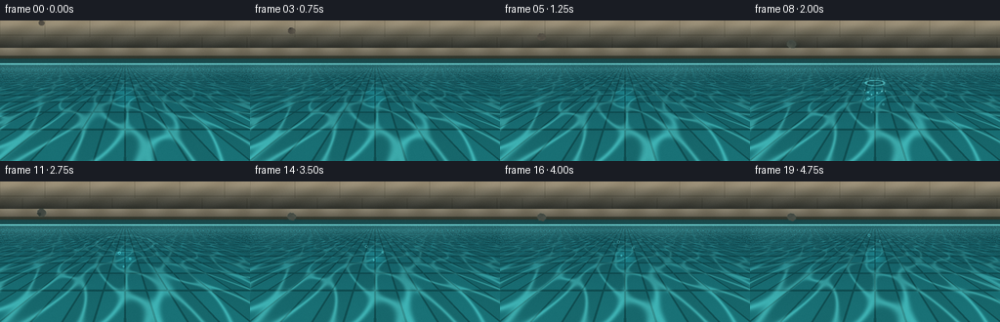
展开代码变化
--- 上一保存版本
+++ 本次保存版本
@@ -38,86 +38,89 @@
def make_water_background(xx, yy, frame):
- """Render the pool wall, coping, and shallow tiled water."""
+ """Render a close view across dark, reflective pool water."""
rgb = np.zeros((RH, RW, 3), dtype=np.float32)
- # Sun-warmed limestone behind the pool.
- wall = np.array([205.0, 188.0, 155.0], dtype=np.float32)
- wall_shadow = np.array([108.0, 119.0, 109.0], dtype=np.float32)
- wall_t = np.clip(yy / 34.0, 0.0, 1.0)
- upper = wall[None, None, :] * (1.0 - wall_t[..., None]) + wall_shadow * wall_t[..., None]
- upper += 7.0 * np.sin(xx * 0.13 + yy * 0.21)[..., None]
- rgb[:] = upper
-
- # Soft block courses and joints.
- joint = (
- (np.abs(((yy + 2.0) % 17.0) - 8.5) > 8.25)
- | (np.abs(((xx + (yy // 17) * 23.0) % 46.0) - 23.0) > 22.7)
+ # Only a narrow strip of the pool rim is visible at this angle.
+ rim = yy < 14.0
+ rim_t = np.clip(yy / 14.0, 0.0, 1.0)
+ rim_color = np.array([105.0, 106.0, 91.0], dtype=np.float32)
+ rim_color = rim_color[None, None, :] * (0.74 + 0.32 * rim_t[..., None])
+ rim_color += (8.0 * np.sin(xx * 0.11 + yy * 0.33))[..., None]
+ rgb[rim] = rim_color[rim]
+ wet_lip = (yy >= 11.0) & (yy < 15.0)
+ rgb[wet_lip] *= np.array([0.66, 0.84, 0.79], dtype=np.float32)
+
+ water = yy >= 13.0
+ v = np.clip((yy - 13.0) / (H - 13.0), 0.0, 1.0)
+ depth = 1.4 / (v + 0.035)
+ world_x = (xx - 128.0) * depth / 77.0
+ world_z = depth
+
+ far = np.array([17.0, 66.0, 73.0], dtype=np.float32)
+ near = np.array([25.0, 116.0, 119.0], dtype=np.float32)
+ mix = smoothstep(0.02, 0.96, v)
+ water_color = far[None, None, :] * (1.0 - mix[..., None]) + near * mix[..., None]
+
+ # Dark reflected foliage, with small warm openings between the leaves.
+ reflection = np.zeros((RH, RW), dtype=np.float32)
+ blobs = [
+ (30.0, 18.0, 31.0, 10.0, 0.80),
+ (79.0, 20.0, 37.0, 9.0, 0.75),
+ (144.0, 17.0, 44.0, 11.0, 0.86),
+ (207.0, 22.0, 42.0, 12.0, 0.75),
+ (246.0, 16.0, 28.0, 8.0, 0.74),
+ (55.0, 31.0, 22.0, 7.0, 0.35),
+ (119.0, 30.0, 20.0, 6.0, 0.32),
+ (178.0, 31.0, 26.0, 7.0, 0.38),
+ (231.0, 33.0, 23.0, 6.0, 0.30),
+ ]
+ for bx, by, brx, bry, strength in blobs:
+ wobble = 1.5 * np.sin(xx * 0.18 + bx)
+ reflection += strength * np.exp(
+ -(((xx - bx - wobble) / brx) ** 2 + ((yy - by) / bry) ** 2)
+ )
+ reflection = np.clip(reflection, 0.0, 1.0) * np.clip(1.25 - v * 2.0, 0.0, 1.0)
+ water_color = water_color * (1.0 - 0.48 * reflection[..., None])
+ water_color += reflection[..., None] * np.array([12.0, 55.0, 50.0], dtype=np.float32)
+
+ # Glints of warm sky caught in the reflected canopy.
+ glint = np.zeros((RH, RW), dtype=np.float32)
+ for bx, by, brx, bry, strength in [
+ (100.0, 22.0, 4.0, 2.0, 0.8),
+ (125.0, 26.0, 2.8, 1.5, 0.6),
+ (160.0, 23.0, 3.5, 1.8, 0.7),
+ (191.0, 29.0, 2.5, 1.2, 0.5),
+ ]:
+ glint += strength * np.exp(-(((xx - bx) / brx) ** 2 + ((yy - by) / bry) ** 2))
+ water_color += np.clip(glint, 0.0, 1.0)[..., None] * np.array(
+ [95.0, 112.0, 74.0], dtype=np.float32
)
- rgb[joint] *= np.array([0.84, 0.84, 0.82], dtype=np.float32)
- wall_light = np.clip(1.1 - yy / 45.0, 0.45, 1.0)
- rgb *= wall_light[..., None]
-
- # Pool coping: pale, rounded stone with a darker lip.
- coping = (yy >= 28.0) & (yy < 39.0)
- cp_t = np.clip((yy - 28.0) / 11.0, 0.0, 1.0)
- coping_color = np.array([174.0, 165.0, 140.0], dtype=np.float32)
- coping_color = coping_color * (1.0 - 0.35 * cp_t[:, :, None])
- coping_color += (12.0 * np.sin(xx * 0.17) * (1.0 - cp_t))[..., None]
- rgb[coping] = coping_color[coping]
- lip = (yy >= 36.0) & (yy < 39.0)
- rgb[lip] *= np.array([0.56, 0.64, 0.62], dtype=np.float32)
-
- # Dark inner wall just beneath the coping.
- inner = (yy >= 39.0) & (yy < 45.0)
- wall_depth = np.clip((yy - 39.0) / 6.0, 0.0, 1.0)
- inner_color = np.array([31.0, 89.0, 92.0], dtype=np.float32)
- inner_color = inner_color[None, None, :] * (1.0 + 0.18 * wall_depth[..., None])
- rgb[inner] = inner_color[inner]
-
- water = yy >= 44.0
- v = np.clip((yy - 44.0) / (H - 44.0), 0.0, 1.0)
- depth = 1.22 / (v + 0.025)
- world_x = (xx - 128.0) * depth / 66.0
- world_z = depth
-
- near = np.array([35.0, 153.0, 157.0], dtype=np.float32)
- far = np.array([20.0, 87.0, 101.0], dtype=np.float32)
- mix = smoothstep(0.0, 0.92, v)
- water_color = far[None, None, :] * (1.0 - mix[..., None]) + near * mix[..., None]
-
- # A gently checkerboarded, cool-tiled pool floor seen through the water.
- tile = 0.58
- ix = np.floor(world_x / tile)
- iz = np.floor(world_z / tile)
- tile_variation = ((ix.astype(np.int32) * 3 + iz.astype(np.int32) * 5) % 7) / 7.0
- checker = ((ix.astype(np.int32) + iz.astype(np.int32)) & 1).astype(np.float32)
- tile_color = (
- np.array([30.0, 137.0, 145.0], dtype=np.float32)[None, None, :]
- * (0.88 + 0.15 * checker[..., None] + 0.045 * tile_variation[..., None])
- )
- water_color = water_color * 0.45 + tile_color * 0.55
-
- gx = np.abs((world_x / tile + 0.5) % 1.0 - 0.5) * tile
- gz = np.abs((world_z / tile + 0.5) % 1.0 - 0.5) * tile
- grout_width = 0.012 + 0.008 * depth
- grout = (gx < grout_width) | (gz < grout_width)
- water_color[grout] *= np.array([0.63, 0.73, 0.73], dtype=np.float32)
-
- # Slow moving caustic net.
+
+ # The pool bottom is barely visible through the water, as broad stone slabs.
+ slab_x = np.floor(world_x / 0.78)
+ slab_z = np.floor(world_z / 0.78)
+ slab_variation = ((slab_x.astype(np.int32) * 7 + slab_z.astype(np.int32) * 11) % 13) / 13.0
+ water_color *= (0.965 + 0.045 * slab_variation[..., None])
+ seam_x = np.abs((world_x / 0.78 + 0.5) % 1.0 - 0.5) < 0.012
+ seam_z = np.abs((world_z / 0.78 + 0.5) % 1.0 - 0.5) < 0.010
+ seam = (seam_x | seam_z) & (v > 0.36)
+ water_color[seam] *= np.array([0.80, 0.88, 0.87], dtype=np.float32)
+
+ # Slow moving caustic net on the submerged floor.
t = frame / FPS
- c1 = np.sin(5.2 * world_x + 1.6 * np.sin(2.7 * world_z + 0.22 * t))
- c2 = np.sin(4.4 * world_z - 1.2 * np.sin(3.1 * world_x - 0.18 * t))
+ c1 = np.sin(5.0 * world_x + 1.6 * np.sin(2.5 * world_z + 0.20 * t))
+ c2 = np.sin(4.2 * world_z - 1.2 * np.sin(3.0 * world_x - 0.16 * t))
net = np.exp(-((c1 + c2) / 0.34) ** 2)
- caustic = net * (0.12 + 0.30 * smoothstep(0.05, 0.85, v))
- water_color += caustic[..., None] * np.array([115.0, 205.0, 195.0], dtype=np.float32)
-
- # Reflected sky sheen and a bright waterline.
- sheen = 0.16 * np.exp(-((yy - 48.0) / 7.0) ** 2)
- sheen += 0.07 * np.exp(-((yy - 53.0) / 15.0) ** 2) * (0.65 + 0.35 * np.sin(xx * 0.045))
- water_color += sheen[..., None] * np.array([170.0, 235.0, 228.0], dtype=np.float32)
- waterline = np.exp(-((yy - 44.4) / 0.75) ** 2)
- water_color += waterline[..., None] * np.array([130.0, 195.0, 188.0], dtype=np.float32)
+ caustic = net * (0.07 + 0.20 * smoothstep(0.20, 0.95, v))
+ water_color += caustic[..., None] * np.array([75.0, 147.0, 139.0], dtype=np.float32)
+
+ # Fresnel sheen and a fine, pale edge where water meets stone.
+ sheen = 0.10 * np.exp(-((yy - 23.0) / 8.0) ** 2)
+ sheen += 0.035 * np.exp(-((yy - 48.0) / 24.0) ** 2)
+ water_color += sheen[..., None] * np.array([130.0, 188.0, 173.0], dtype=np.float32)
+ waterline = np.exp(-((yy - 13.6) / 0.62) ** 2)
+ water_color += waterline[..., None] * np.array([90.0, 147.0, 132.0], dtype=np.float32)
rgb[water] = water_color[water]
return rgb, world_x, world_z, v
@@ -129,22 +132,22 @@
if tau < 0:
return np.zeros((RH, RW), dtype=np.float32)
- cx, cy = 128.0, 65.0
- rho = np.sqrt((xx - cx) ** 2 + ((yy - cy) / 0.29) ** 2)
- fade = np.exp(-0.52 * tau)
+ cx, cy = 128.0, 31.0
+ rho = np.sqrt((xx - cx) ** 2 + ((yy - cy) / 0.25) ** 2)
+ fade = np.exp(-0.43 * tau)
h = np.zeros((RH, RW), dtype=np.float32)
- for speed, amp, width in ((37.0, 1.0, 8.0), (22.0, 0.42, 6.0)):
+ for speed, amp, width in ((33.0, 0.82, 6.0), (20.0, 0.30, 5.0)):
front = speed * tau + 2.0
- trail = np.exp(-((rho - front + 5.0) / width) ** 2)
- trail += 0.46 * np.exp(-((rho - front + 13.0) / (width * 1.1)) ** 2)
- oscillation = np.sin(2.0 * np.pi * (rho - front) / 7.5)
+ trail = np.exp(-((rho - front + 4.0) / width) ** 2)
+ trail += 0.40 * np.exp(-((rho - front + 11.0) / (width * 1.08)) ** 2)
+ oscillation = np.sin(2.0 * np.pi * (rho - front) / 6.5)
h += amp * trail * oscillation
h *= fade
h *= smoothstep(0.0, 2.0, tau)
# The impact depression is brief and small, preserving a gentle splash.
- h -= 0.9 * np.exp(-((rho / 9.0) ** 2)) * np.exp(-tau * 2.8)
+ h -= 0.75 * np.exp(-((rho / 6.5) ** 2)) * np.exp(-tau * 2.8)
return h
@@ -154,15 +157,15 @@
return rgb
gy, gx = np.gradient(h)
- # Shading from a soft upper-left source plus a cyan specular ridge.
- shade = np.clip(-0.62 * gx - 0.38 * gy, -1.0, 1.0)
- ridge = np.exp(-((np.abs(gx) + np.abs(gy)) / 0.12) ** 2)
- alpha = smoothstep(0.045, 0.19, v)
+ # The reflected canopy breaks into short highlights on the wave slopes.
+ shade = np.clip(-0.62 * gx - 0.42 * gy, -1.0, 1.0)
+ ridge = np.exp(-((np.abs(gx) + np.abs(gy)) / 0.16) ** 2)
+ alpha = smoothstep(0.015, 0.12, v)
out = rgb.copy()
- out += (shade * 18.0 + ridge * 20.0 * np.maximum(h, 0.0))[..., None] * np.array(
- [0.70, 1.0, 0.98], dtype=np.float32
+ out += (shade * 13.0 + ridge * 10.0 * np.maximum(h, 0.0))[..., None] * np.array(
+ [0.74, 1.0, 0.92], dtype=np.float32
)
- out -= (np.maximum(-shade, 0.0) * 10.0)[..., None]
+ out -= (np.maximum(-shade, 0.0) * 8.0)[..., None]
out = rgb * (1.0 - alpha[..., None]) + out * alpha[..., None]
return out
@@ -225,10 +228,10 @@
texture_y = np.clip((yy - cy + 90.0).astype(np.int32), 0, TEXTURE.shape[0] - 1)
grain = TEXTURE[texture_y, texture_x]
- base = np.array([108.0, 101.0, 88.0], dtype=np.float32)
- stone = base[None, None, :] * (0.57 + 0.56 * diffuse[..., None])
- stone += grain[..., None] * np.array([10.0, 9.0, 7.0], dtype=np.float32)
- stone += (nz * 8.0)[..., None] * np.array([0.9, 0.95, 1.0], dtype=np.float32)
+ base = np.array([101.0, 98.0, 85.0], dtype=np.float32)
+ stone = base[None, None, :] * (0.61 + 0.46 * diffuse[..., None])
+ stone += grain[..., None] * np.array([8.0, 7.5, 6.0], dtype=np.float32)
+ stone += (nz * 6.0)[..., None] * np.array([0.9, 0.95, 1.0], dtype=np.float32)
# Water bounce on the lower-right side.
bounce = np.clip(nx * 0.45 + ny * 0.55, 0.0, 1.0) * (1.0 - nz * 0.4)
@@ -241,7 +244,7 @@
# Rim light and dark edge.
rim = smoothstep(0.72, 0.96, rr) * (0.5 + 0.5 * np.clip(-nx - ny, 0.0, 1.0))
- stone += rim[..., None] * np.array([18.0, 18.0, 16.0], dtype=np.float32)
+ stone += rim[..., None] * np.array([15.0, 15.0, 13.0], dtype=np.float32)
edge = smoothstep(0.93, 1.03, rr)
stone *= (1.0 - 0.20 * edge)[..., None]
@@ -271,55 +274,55 @@
return rgb
out = rgb.copy()
- cx, cy = 128.0, 64.0
+ cx, cy = 128.0, 31.0
# Small white contact ring.
- ring_r = 3.0 + 26.0 * tau
- rho = np.sqrt((xx - cx) ** 2 + ((yy - cy) / 0.29) ** 2)
- ring = np.exp(-((rho - ring_r) / (1.15 + 0.35 * tau)) ** 2)
- ring *= np.exp(-1.8 * tau)
- out += ring[..., None] * np.array([120.0, 190.0, 184.0], dtype=np.float32)
+ ring_r = 2.4 + 25.0 * tau
+ rho = np.sqrt((xx - cx) ** 2 + ((yy - cy) / 0.25) ** 2)
+ ring = np.exp(-((rho - ring_r) / (0.95 + 0.30 * tau)) ** 2)
+ ring *= np.exp(-1.65 * tau)
+ out += ring[..., None] * np.array([92.0, 158.0, 146.0], dtype=np.float32)
# A compact crown at contact.
- if tau < 0.65:
+ if tau < 0.50:
crown = np.exp(-tau * 5.0)
- for angle in np.linspace(-2.5, -0.65, 7):
- sx = cx + 10.5 * np.cos(angle)
- sy = cy + 2.0 + 10.5 * 0.28 * np.sin(angle) - 15.0 * tau
+ for angle in np.linspace(-2.5, -0.65, 6):
+ sx = cx + 8.0 * np.cos(angle)
+ sy = cy + 1.2 + 8.0 * 0.25 * np.sin(angle) - 12.0 * tau
r = 0.7 + 0.55 * np.exp(-tau * 2.0)
drop = np.exp(-(((xx - sx) ** 2 + (yy - sy) ** 2) / (r * r)))
- out += (drop * crown * 0.72)[..., None] * np.array([145.0, 218.0, 214.0], dtype=np.float32)
+ out += (drop * crown * 0.60)[..., None] * np.array([112.0, 175.0, 165.0], dtype=np.float32)
# A handful of tiny droplets thrown outward by the impact.
droplet_data = [
- (-8.0, -6.0, -13.0),
- (-4.0, -8.0, -18.0),
- (2.5, -9.0, -16.0),
- (8.0, -7.0, -12.0),
- (-12.0, -4.0, -8.0),
- (12.0, -3.0, -9.0),
+ (-7.0, -5.0, -11.0),
+ (-3.5, -7.0, -15.0),
+ (2.0, -7.0, -13.0),
+ (7.0, -5.0, -10.0),
+ (-10.0, -3.0, -7.0),
+ (10.0, -2.0, -8.0),
]
for vx, vy, lift in droplet_data:
- if tau <= 0.72:
- dx = cx + vx * tau * 3.5
- dy = cy + 2.0 + vy * tau * 2.2 - lift * tau * 2.8 + 30.0 * tau * tau
+ if tau <= 0.52:
+ dx = cx + vx * tau * 3.0
+ dy = cy + 1.2 + vy * tau * 2.0 - lift * tau * 2.5 + 20.0 * tau * tau
radius = 0.70 + 0.22 * tau
drop = np.exp(-(((xx - dx) ** 2 + (yy - dy) ** 2) / (radius * radius)))
- out += (drop * (1.0 - tau / 0.72) * 0.82)[..., None] * np.array(
- [175.0, 231.0, 225.0], dtype=np.float32
+ out += (drop * (1.0 - tau / 0.52) * 0.70)[..., None] * np.array(
+ [125.0, 184.0, 173.0], dtype=np.float32
)
# Bubbles released around the sinking stone.
if frame >= 8:
- bubble_specs = [(121.0, 80.0, 1.15), (135.0, 86.0, 0.85), (126.0, 94.0, 0.65)]
+ bubble_specs = [(123.0, 40.0, 1.0), (134.0, 44.0, 0.75), (126.0, 49.0, 0.58)]
for index, (bx, by, radius) in enumerate(bubble_specs):
age = max(0.0, (frame - 8) / FPS)
- x = bx + 1.8 * np.sin(index * 2.1 + age * 3.2)
- y = by - 9.0 * age
- if y > 47.0:
+ x = bx + 1.4 * np.sin(index * 2.1 + age * 3.2)
+ y = by - 5.5 * age
+ if y > 16.0:
bubble = np.exp(-(((xx - x) ** 2 + (yy - y) ** 2) / (radius * radius)))
rim = np.exp(-((np.sqrt((xx - x) ** 2 + (yy - y) ** 2) - radius) / 0.26) ** 2)
- out += (rim * 0.65)[..., None] * np.array([105.0, 185.0, 184.0], dtype=np.float32)
+ out += (rim * 0.50)[..., None] * np.array([90.0, 160.0, 150.0], dtype=np.float32)
out -= (bubble * 0.08)[..., None] * np.array([20.0, 55.0, 58.0], dtype=np.float32)
return out
@@ -334,37 +337,39 @@
rgb = add_ripples(rgb, xx, yy, v, frame)
stone_positions = [
- (128.0, 8.0, 0.76),
- (128.0, 15.0, 0.82),
- (128.0, 23.0, 0.88),
- (128.0, 32.0, 0.95),
- (128.0, 42.0, 1.02),
- (128.0, 51.0, 1.08),
- (128.0, 58.5, 1.13),
- (128.0, 65.0, 1.16),
- (128.0, 73.0, 1.16),
- (128.0, 81.0, 1.15),
- (128.0, 89.0, 1.14),
- (128.0, 96.0, 1.13),
- (128.0, 101.5, 1.12),
- (128.0, 105.5, 1.11),
- (128.0, 108.0, 1.10),
- (128.0, 109.3, 1.10),
- (128.0, 109.8, 1.10),
- (128.0, 109.6, 1.10),
- (128.0, 109.8, 1.10),
- (128.0, 109.7, 1.10),
+ (130.0, -8.0, 0.64),
+ (129.0, -3.0, 0.66),
+ (129.0, 3.0, 0.69),
+ (128.0, 9.0, 0.72),
+ (128.0, 15.0, 0.75),
+ (128.0, 20.5, 0.78),
+ (128.0, 25.5, 0.80),
+ (128.0, 29.0, 0.82),
+ (128.0, 32.0, 0.83),
+ (128.0, 35.0, 0.84),
+ (128.0, 38.0, 0.85),
+ (128.0, 41.0, 0.85),
+ (128.0, 44.0, 0.86),
+ (128.0, 47.0, 0.86),
+ (128.0, 49.0, 0.86),
+ (128.0, 50.5, 0.86),
+ (128.0, 51.5, 0.86),
+ (128.0, 52.1, 0.86),
+ (128.0, 52.4, 0.86),
+ (128.0, 52.5, 0.86),
]
cx, cy, scale = stone_positions[frame]
- rx, ry = 12.3 * scale, 10.7 * scale
- rotation = 0.11 + 0.018 * frame
+ rx, ry = 11.7 * scale, 9.7 * scale
+ rotation = -0.13 + 0.015 * frame
underwater = frame >= 8
if frame < 8:
- proximity = np.clip((cy - 8.0) / 57.0, 0.0, 1.0)
- rgb = draw_shadow(rgb, 131.0, 65.0, 7.0 + 4.0 * proximity, 2.4 + 1.3 * proximity, 0.12 + 0.18 * proximity)
+ proximity = np.clip((cy + 8.0) / 37.0, 0.0, 1.0)
+ rgb = draw_shadow(
+ rgb, 131.0, 32.0, 4.0 + 3.0 * proximity, 1.2 + 1.0 * proximity, 0.10 + 0.14 * proximity
+ )
else:
- rgb = draw_shadow(rgb, cx + 6.0, cy + 9.0, rx * 1.05, ry * 0.55, 0.20, underwater=True)
+ rgb = draw_shadow(rgb, cx + 5.0, cy + 7.0, rx * 0.95, ry * 0.45, 0.18, underwater=True)
rgb, mask = draw_stone(rgb, xx, yy, frame, cx, cy, rx, ry, rotation, underwater)
@@ -378,8 +383,8 @@
rgb = draw_surface_effects(rgb, xx, yy, frame)
# Gentle vignette and film grain keep the small frame from looking flat.
- cxv, cyv = 128.0, 78.0
- vignette = np.clip(1.0 - 0.00155 * ((xx - cxv) ** 2 + (yy - cyv) ** 2), 0.76, 1.0)
+ cxv, cyv = 128.0, 68.0
+ vignette = np.clip(1.0 - 0.00120 * ((xx - cxv) ** 2 + (yy - cyv) ** 2), 0.78, 1.0)
rgb *= vignette[..., None]
rng = np.random.default_rng(700 + frame)
grain = rng.normal(0.0, 1.7, (RH, RW, 1)).astype(np.float32)
候选 03播放与检查图

候选 04播放与检查图
点击播放 · 原生 RGB 像素

展开代码变化
--- 上一保存版本
+++ 本次保存版本
@@ -160,7 +160,7 @@
# The reflected canopy breaks into short highlights on the wave slopes.
shade = np.clip(-0.62 * gx - 0.42 * gy, -1.0, 1.0)
ridge = np.exp(-((np.abs(gx) + np.abs(gy)) / 0.16) ** 2)
- alpha = smoothstep(0.015, 0.12, v)
+ alpha = smoothstep(0.01, 0.055, v)
out = rgb.copy()
out += (shade * 13.0 + ridge * 10.0 * np.maximum(h, 0.0))[..., None] * np.array(
[0.74, 1.0, 0.92], dtype=np.float32
@@ -254,6 +254,23 @@
alpha = mask[..., None]
return rgb * (1.0 - alpha) + stone * alpha, mask
+
+
+def draw_stone_reflection(rgb, xx, yy, cx, cy, rx, ry, rotation):
+ """Draw the near-vertical reflected underside beneath the floating stone."""
+ mask_img = Image.new("L", (RW, RH), 0)
+ draw = ImageDraw.Draw(mask_img)
+ reflected_cy = cy + ry * 1.10
+ draw.ellipse(
+ (cx - rx * 0.83, reflected_cy - ry * 0.72, cx + rx * 0.83, reflected_cy + ry * 0.52),
+ fill=255,
+ )
+ reflected = np.asarray(mask_img.filter(ImageFilter.GaussianBlur(1.6)), dtype=np.float32) / 255.0
+ reflected *= smoothstep(0.04, 0.22, (yy - cy) / max(ry, 1.0))
+ reflected *= smoothstep(13.0, 16.0, yy)
+ color = np.array([32.0, 47.0, 42.0], dtype=np.float32)
+ alpha = reflected * 0.48
+ return rgb * (1.0 - alpha[..., None]) + color[None, None, :] * alpha[..., None]
def draw_shadow(rgb, cx, cy, rx, ry, strength, underwater=False):
@@ -364,11 +381,13 @@
underwater = frame >= 8
if frame < 8:
+ rgb = draw_stone_reflection(rgb, xx, yy, cx, cy, rx, ry, rotation)
proximity = np.clip((cy + 8.0) / 37.0, 0.0, 1.0)
rgb = draw_shadow(
rgb, 131.0, 32.0, 4.0 + 3.0 * proximity, 1.2 + 1.0 * proximity, 0.10 + 0.14 * proximity
)
else:
+ rgb = draw_stone_reflection(rgb, xx, yy, cx, cy, rx, ry, rotation)
rgb = draw_shadow(rgb, cx + 5.0, cy + 7.0, rx * 0.95, ry * 0.45, 0.18, underwater=True)
rgb, mask = draw_stone(rgb, xx, yy, frame, cx, cy, rx, ry, rotation, underwater)
候选 06播放与检查图
点击播放 · 原生 RGB 像素

展开代码变化
--- 上一保存版本
+++ 本次保存版本
@@ -127,27 +127,28 @@
def ripple_field(xx, yy, frame, impact_frame=7):
- """Screen-space surface displacement for concentric, perspective rings."""
+ """World-space displacement projected through the pool perspective."""
tau = (frame - impact_frame) / FPS
if tau < 0:
return np.zeros((RH, RW), dtype=np.float32)
- cx, cy = 128.0, 31.0
- rho = np.sqrt((xx - cx) ** 2 + ((yy - cy) / 0.25) ** 2)
- fade = np.exp(-0.43 * tau)
- h = np.zeros((RH, RW), dtype=np.float32)
-
- for speed, amp, width in ((33.0, 0.82, 6.0), (20.0, 0.30, 5.0)):
- front = speed * tau + 2.0
- trail = np.exp(-((rho - front + 4.0) / width) ** 2)
- trail += 0.40 * np.exp(-((rho - front + 11.0) / (width * 1.08)) ** 2)
- oscillation = np.sin(2.0 * np.pi * (rho - front) / 6.5)
- h += amp * trail * oscillation
-
- h *= fade
- h *= smoothstep(0.0, 2.0, tau)
+ v = np.clip((yy - 13.0) / (H - 13.0), 0.0, 1.0)
+ z = 1.28 / (v + 0.045)
+ x = (xx - 128.0) * z / 74.0
+ center_z = 1.28 / (0.14 + 0.045)
+ radius = np.sqrt(x * x + (z - center_z) ** 2)
+
+ front = 0.65 + 5.4 * tau
+ fade = np.exp(-0.50 * tau)
+ phase = radius - front
+ # A decaying wave train trails behind the leading crest.
+ behind = np.clip(-phase / 2.8, 0.0, 1.0)
+ packet = np.exp(-((phase / 1.0) ** 2)) + 0.72 * behind * np.exp(phase / 1.9)
+ h = 0.065 * packet * np.sin(phase * 7.4)
+ h *= fade * smoothstep(0.0, 0.18, tau)
+
# The impact depression is brief and small, preserving a gentle splash.
- h -= 0.75 * np.exp(-((rho / 6.5) ** 2)) * np.exp(-tau * 2.8)
+ h -= 0.040 * np.exp(-((radius / 1.35) ** 2)) * np.exp(-tau * 2.8)
return h
@@ -157,17 +158,25 @@
return rgb
gy, gx = np.gradient(h)
- # The reflected canopy breaks into short highlights on the wave slopes.
- shade = np.clip(-0.62 * gx - 0.42 * gy, -1.0, 1.0)
- ridge = np.exp(-((np.abs(gx) + np.abs(gy)) / 0.16) ** 2)
- alpha = smoothstep(0.01, 0.055, v)
- out = rgb.copy()
- out += (shade * 13.0 + ridge * 10.0 * np.maximum(h, 0.0))[..., None] * np.array(
- [0.74, 1.0, 0.92], dtype=np.float32
- )
- out -= (np.maximum(-shade, 0.0) * 8.0)[..., None]
- out = rgb * (1.0 - alpha[..., None]) + out * alpha[..., None]
- return out
+ slope_x = np.clip(gx * 27.0, -1.2, 1.2)
+ slope_y = np.clip(gy * 18.0, -1.2, 1.2)
+ norm = np.sqrt(slope_x * slope_x + slope_y * slope_y + 1.0)
+ normal_x = -slope_x / norm
+ normal_y = -slope_y / norm
+
+ light = np.array([-0.48, -0.82, 0.31], dtype=np.float32)
+ light /= np.linalg.norm(light)
+ diffuse = np.clip(normal_x * light[0] + normal_y * light[1] + light[2] / norm, 0.0, 1.0)
+ specular = np.clip(normal_x * 0.42 + normal_y * 0.78 + 0.46, 0.0, 1.0) ** 18
+ slope = np.sqrt(slope_x * slope_x + slope_y * slope_y)
+ alpha = smoothstep(0.008, 0.04, v)
+
+ reflection_color = np.array([80.0, 113.0, 92.0], dtype=np.float32)
+ highlight_color = np.array([173.0, 205.0, 170.0], dtype=np.float32)
+ out = rgb + (diffuse[..., None] - 0.42) * reflection_color
+ out += (specular * 0.82)[..., None] * highlight_color
+ out += (slope * 2.0)[..., None] * np.array([17.0, 31.0, 24.0], dtype=np.float32)
+ return rgb * (1.0 - alpha[..., None]) + out * alpha[..., None]
def stone_mask(cx, cy, rx, ry, rotation=0.0):
候选 07播放与检查图
点击播放 · 原生 RGB 像素

展开代码变化
代码未变化；重新保存了产物。
候选 08播放与检查图
点击播放 · 原生 RGB 像素
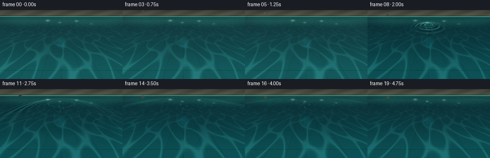
展开代码变化
--- 上一保存版本
+++ 本次保存版本
@@ -204,11 +204,11 @@
medium = rng.normal(0.0, 1.0, (size // 2, size // 2)).astype(np.float32)
coarse = rng.normal(0.0, 1.0, (size // 5, size // 5)).astype(np.float32)
medium = np.asarray(
- Image.fromarray(medium, mode="F").resize((size, size), Image.Resampling.BICUBIC),
+ Image.fromarray(medium).resize((size, size), Image.Resampling.BICUBIC),
dtype=np.float32,
)
coarse = np.asarray(
- Image.fromarray(coarse, mode="F").resize((size, size), Image.Resampling.BICUBIC),
+ Image.fromarray(coarse).resize((size, size), Image.Resampling.BICUBIC),
dtype=np.float32,
)
texture = 0.55 * fine + 1.4 * medium + 2.8 * coarse
@@ -403,7 +403,7 @@
# Add a few wet glints on the stone and a thin refraction halo underwater.
if underwater:
- halo_img = Image.fromarray((mask * 255.0).astype(np.uint8), mode="L")
+ halo_img = Image.fromarray((mask * 255.0).astype(np.uint8))
halo = np.asarray(halo_img.filter(ImageFilter.GaussianBlur(2.8)), dtype=np.float32) / 255.0
halo = np.clip(halo - mask, 0.0, 1.0)
rgb += (halo * 0.16)[..., None] * np.array([30.0, 98.0, 100.0], dtype=np.float32)
@@ -419,7 +419,7 @@
rgb += grain
rgb = np.clip(rgb, 0.0, 255.0).astype(np.uint8)
- image = Image.fromarray(rgb, mode="RGB").resize((W, H), Image.Resampling.LANCZOS)
+ image = Image.fromarray(rgb).resize((W, H), Image.Resampling.LANCZOS)
return np.asarray(image, dtype=np.uint8)
可观测工具轨迹
实际执行的命令与返回图片。
命令 1exit 0
/bin/bash -c "pwd && rg --files -g 'prompt.txt' -g 'GENERATION_RULES.md' -g 'task_spec.json' -g '"'!node_modules'"' -g '"'!vendor'"'"
命令 2exit 0
/bin/bash -c 'ls -la'
命令 3exit 0
/bin/bash -c 'cat prompt.txt'
命令 4exit 0
/bin/bash -c 'cat GENERATION_RULES.md'
命令 5exit 0
/bin/bash -c 'cat task_spec.json'
命令 6exit 0
/bin/bash -c "sed -n '1,240p' artifact_io.py && printf '\\n---PLAYER---\\n' && sed -n '1,220p' player_template.html"
命令 7exit 1
/bin/bash -c 'python generate.py'
命令 8exit 1
/bin/bash -c 'python generate.py'
命令 9exit 0
/bin/bash -c 'python -c "import scipy; print(scipy.__version__)"'
命令 10exit 0
/bin/bash -c 'python generate.py'
命令 11exit 0
/bin/bash -c "python - <<'PY' import generate, numpy as np m=generate.stone_mask(128,8,12.3*.76,10.7*.76,.11) ys,xs=np.where(m>0) print(xs.min(),xs.max(),ys.min(),ys.max()) PY"
命令 12exit 1
/bin/bash -c 'python generate.py'
命令 13exit 0
/bin/bash -c 'python generate.py'
命令 14exit 0
/bin/bash -c "nl -ba generate.py | sed -n '1,430p'"
命令 15exit 0
/bin/bash -c 'python generate.py'
命令 16exit 0
/bin/bash -c 'python generate.py'
命令 17exit 0
/bin/bash -c "python - <<'PY'
from pathlib import Path
from PIL import Image
import numpy as np
for p in sorted(Path('frames').glob('*.png')):
a=np.asarray(Image.open(p)).astype(float)
print(p.name, round(a.mean(),1), round(a.std(),1), int(a.min()), int(a.max()))
PY"命令 18exit 0
/bin/bash -c 'ls -lh index.html pixels.npz inspection.png transition_check.png frames/*.png | tail -n 8'
命令 19exit 0
/bin/bash -c "python - <<'PY'
import json, numpy as np
from pathlib import Path
from PIL import Image
frames=np.stack([np.asarray(Image.open(p).convert('RGB')) for p in sorted(Path('frames').glob('*.png'))])
npz=np.load('pixels.npz')['pixels']
assert frames.shape==(20,144,256,3) and frames.dtype==np.uint8
packed=(frames[...,0].astype(np.uint32)<<16)|(frames[...,1].astype(np.uint32)<<8)|frames[...,2]
assert np.array_equal(packed.transpose(1,2,0),npz)
diffs=np.abs(frames[1:].astype(int)-frames[:-1].astype(int))
print('frames',frames.shape,'range',frames.min(),frames.max(),'packed match',True)
print('frame diffs', [round(float(x.mean()),2) for x in diffs])
print('static?', np.all(diffs[:6]==0))
html=Path('index.html').read_text()
print('player ready', 'window.__pixelReady=true' in html, 'html MB', round(len(html)/1e6,2))
PY"命令 20exit 0
/bin/bash -c 'python -m py_compile generate.py && git status --short 2>/dev/null || true'
命令 21exit 0
/bin/bash -c "ls -la | sed -n '1,80p'"
命令 22exit 0
/bin/bash -c "python - <<'PY'
from pathlib import Path
p=Path('generate.py')
s=p.read_text()
s=s.replace('Image.fromarray(medium, mode=\"F\")','Image.fromarray(medium)')
s=s.replace('Image.fromarray(coarse, mode=\"F\")','Image.fromarray(coarse)')
s=s.replace('Image.fromarray(rgb, mode=\"RGB\")','Image.fromarray(rgb)')
s=s.replace('Image.fromarray((mask * 255.0).astype(np.uint8), mode=\"L\")','Image.fromarray((mask * 255.0).astype(np.uint8))')
p.write_text(s)
PY
python generate.py"命令 23exit 0
/bin/bash -c "python - <<'PY'
import numpy as np
from pathlib import Path
from PIL import Image
frames=np.stack([np.asarray(Image.open(p).convert('RGB')) for p in sorted(Path('frames').glob('*.png'))])
packed=np.load('pixels.npz')['pixels']
expected=((frames[...,0].astype(np.uint32)<<16)|(frames[...,1].astype(np.uint32)<<8)|frames[...,2]).transpose(1,2,0)
assert frames.shape==(20,144,256,3) and np.array_equal(packed,expected)
assert Path('index.html').stat().st_size > 1_000_000
print('validated 20 frames, 256x144 RGB; packed data and player artifacts present')
PY"视觉工具实际返回图片 1

视觉工具实际返回图片 2
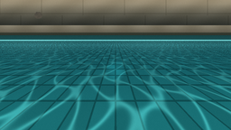
视觉工具实际返回图片 3
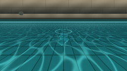
视觉工具实际返回图片 4
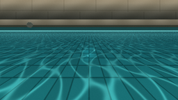
视觉工具实际返回图片 5
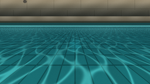
视觉工具实际返回图片 6

视觉工具实际返回图片 7
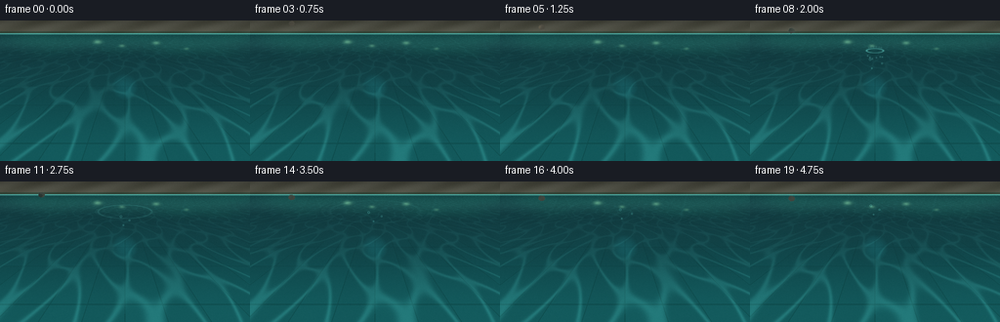
视觉工具实际返回图片 8
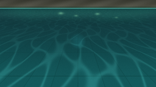
视觉工具实际返回图片 9
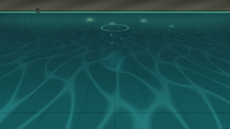
视觉工具实际返回图片 10
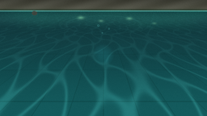
视觉工具实际返回图片 11

视觉工具实际返回图片 12
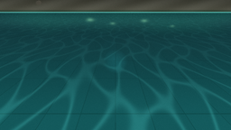
视觉工具实际返回图片 13
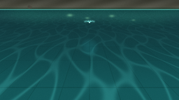
视觉工具实际返回图片 14

视觉工具实际返回图片 15
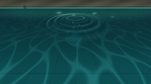
视觉工具实际返回图片 16
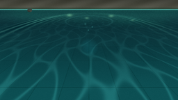
视觉工具实际返回图片 17
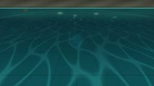
视觉工具实际返回图片 18
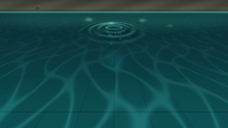
保存候选 8 份；完成命令 23 次；可验证图片返回 18 张。原始 API 响应与完整日志保留在本地。